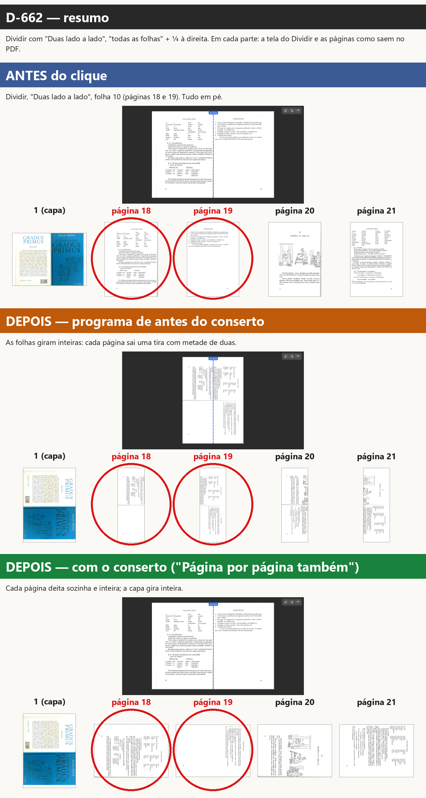
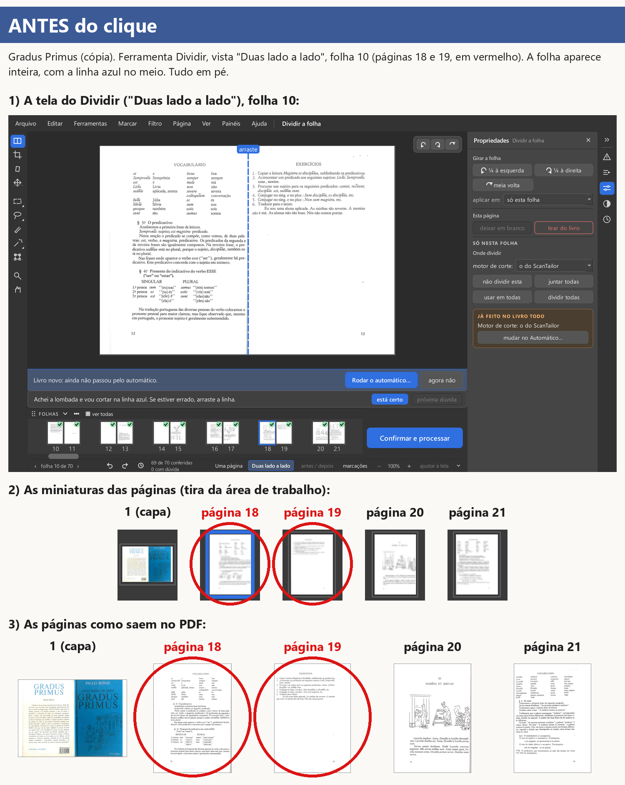
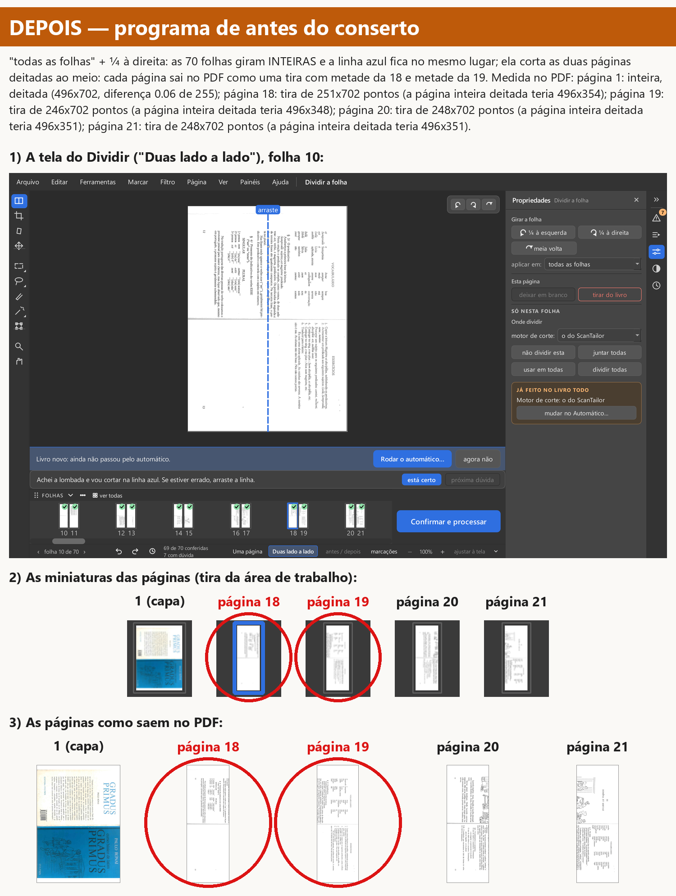
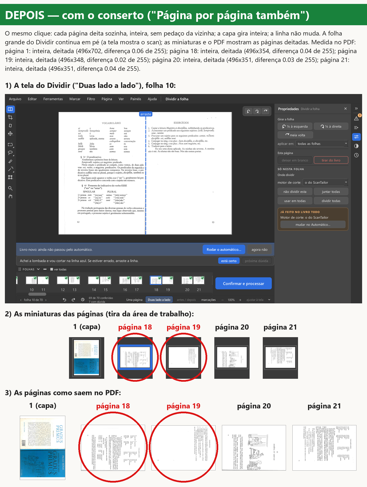

Ramo girar-capa-2026-11-07 (saiu do obra-2026-10-26). Teste de máquina (provas automáticas e medidas do PDF)
e de olho (as imagens, para o Samuel conferir). PRONTO PARA A CONFERÊNCIA COM A JANELA ABERTA (outro agente).
s1-pdf-antes-e-depois.png: na capa, "todas as folhas" + ¼ à esquerda. Código de antes: as páginas 2, 3, 14 e 15
saem como tiras em pé com metade da folha (a 2 mostra o título que é da 3; a 14 mostra a águia que é da 15). Código
novo: cada página deitada, inteira, com o seu conteúdo; a capa em pé.s2-pdf-antes-e-depois.png: na página 14, "todas as páginas" + ¼ à esquerda. Código de antes: a capa sai igual,
sem girar. Código novo: a capa sai girada, como as outras.s1-janela-antes-e-depois.png e s2-janela-antes-e-depois.png: a janela no mesmo caminho.Caminho das imagens: livro novo com os ajustes de fábrica (endireitar e cortar as bordas desligados, filtro Original),
folhas 2 a 70 divididas pela lombada, folha 1 inteira, ferramenta Cortar as bordas. O PDF com o corte das bordas
ligado foi conferido pelas provas automáticas ([True]).
tests/test_decisoes_girar_capa.py (19 provas) no código de antes: 15 falham pelo defeito
(ex.: "assert [270, 270, 270, 270] == [270, 270, 0, 0]": as folhas divididas giravam como folha); 4 passam (as que
conferem o que não pode mudar). No código novo: 19 passam.proposta-testes-d636.diff e foi conferida numa cópia à parte.s3-*.png.proposta-teste-daqui.diff).test_d148 (passa no PC).D-663 — "Posso trocar o teste antigo do "daqui em diante"?" → "Sim, pode trocar (recomendo)". Trocada só a linha
da proposta proposta-teste-daqui.diff, num commit só (269f05f3). O arquivo do teste passa inteiro (10 de 10).
D-662 — "No Dividir, com "Duas lado a lado", "todas as folhas": gira a folha inteira ou página por página?" → "Página por página também".
O defeito, em frases simples: no Dividir com "Duas lado a lado", "todas as folhas" girava as folhas do scan inteiras. A linha azul ficava no mesmo lugar e cortava as duas páginas deitadas ao meio: no PDF, cada página saía como uma tira com metade de duas páginas.
O que mudou (c76d4b97): ali, numa folha dividida, "todas as folhas" faz exatamente o mesmo que o "todas as páginas" de fora do Dividir (o caminho da simulação de 09/11, que o Samuel viu): cada página gira sozinha e inteira, virada como a página da tela; a capa gira inteira; a linha da divisão não muda. Um Ctrl+Z desfaz tudo de uma vez; Ctrl+Y refaz. A frase do Histórico diz "todas as 139 páginas, viradas como a página 18".
Não mudou: o girar fora do Dividir; o Dividir com "Uma página"; "só esta folha" no Dividir (gira a folha da tela, D-618); as palavras do quadro e da lista ("Girar a folha", "todas as folhas"); a D-638 na capa (folha inteira).
Imagens (Gradus Primus copiado, 70 folhas, a mesma cópia das provas de 09/11; janela desenhada na memória, nada abriu na tela; Dividir, "Duas lado a lado", folha 10, "todas as folhas" + ¼ à direita):




A medida (no PDF): cada página de depois comparada com a mesma página de antes girada ¼.
Antes do conserto: a capa sai inteira, deitada; as páginas 18, 19, 20 e 21 saem como tiras (251x702 pontos, quando
a página inteira deitada teria 496x354). Com o conserto: as cinco saem inteiras, deitadas, do tamanho certo, com
diferença de 0,02 a 0,09 (de 255) para a página de antes girada, ou seja, a mesma imagem. Os números estão em
d662-estado-antes-do-conserto.json e d662-estado-com-o-conserto.json.
Provas novas: tests/test_decisoes_girar_dividir_duas.py (10 provas). No código de antes do conserto (3216b885), as
6 de reversão falham (ex.: no PDF a página 3 do livro de teste sai 339x147 em vez de 159x231) e as 4 que conferem o que
não pode mudar passam: reversao-d662-no-codigo-antigo.txt. No código novo: 10 passam.
Testes: PC, um arquivo por vez, sem janela na tela (série "D-662 e D-663 (10/11)" em resultado-testes.txt, commit c76d4b97): 73 arquivos (os do girar, do Dividir, da tira, do PDF, dos cadernos e todos os test_decisoes*.py), todos passam inteiros, nenhuma falha. GitHub, suíte 42814866808 (as 5 partes e os botões/prints da janela real): tudo passou. Nenhum teste antigo além do autorizado (D-663) foi mudado. Velocidade: filtro 42814872526 (obra-2026-10-26 → girar-capa e8a8fb4c): "igual (dentro do vai-e-vem)"; abrir +0,3%, trocar de página -0,6%, Mágico pro +0,2%, Preto e branco -0,7%. Nada mais lento (o conserto só roda no clique de girar; core/ não mudou).
Editor de Impressão · gerado em 10/11/2026 às 09:54